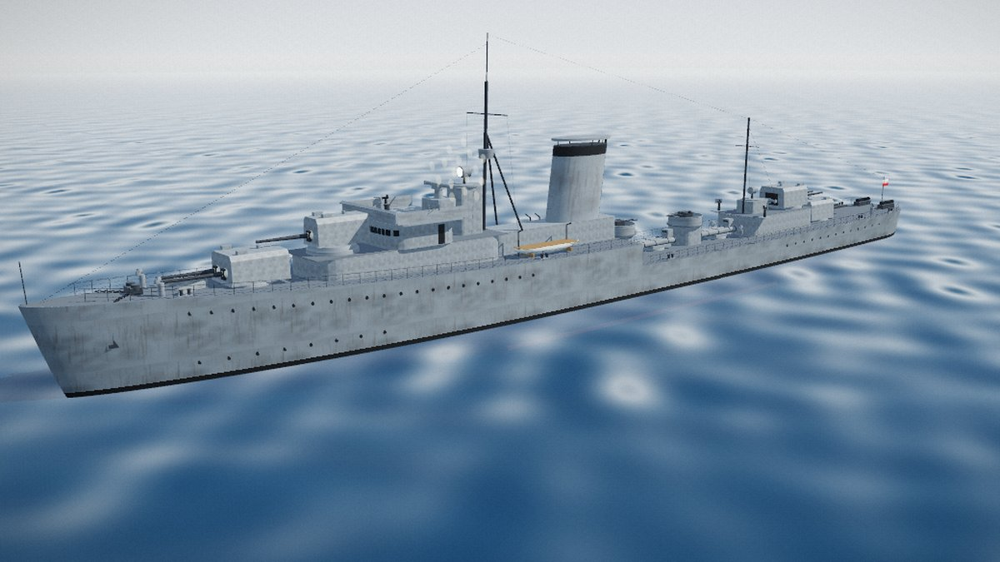
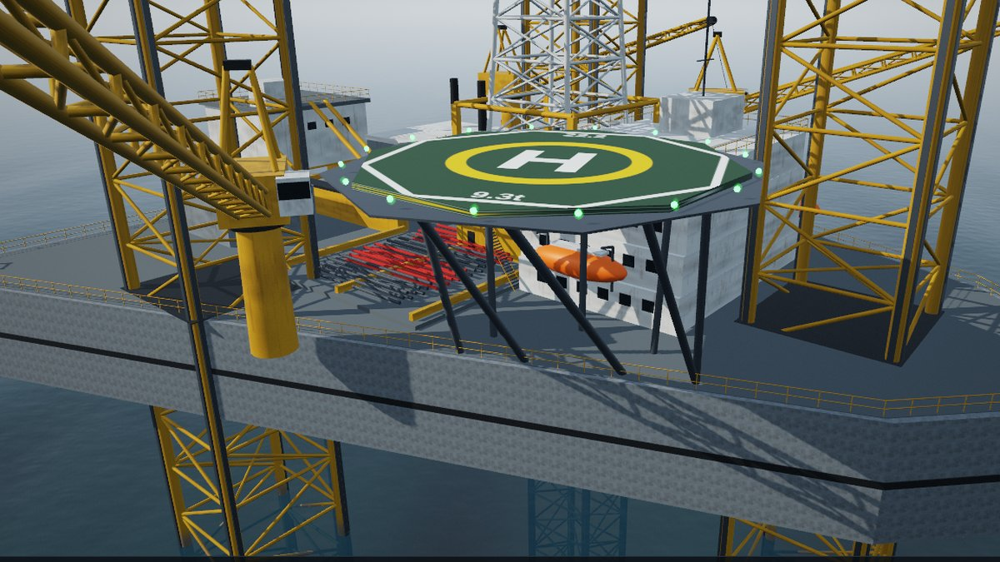
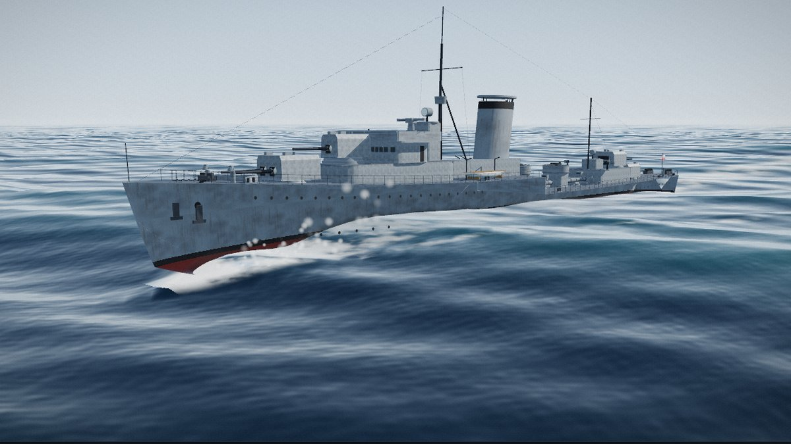
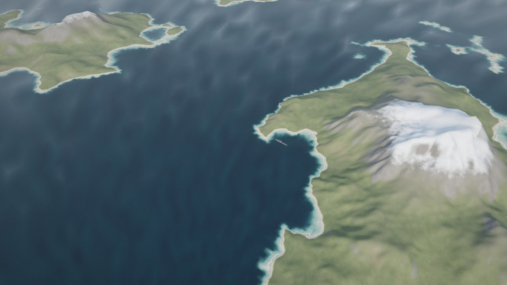
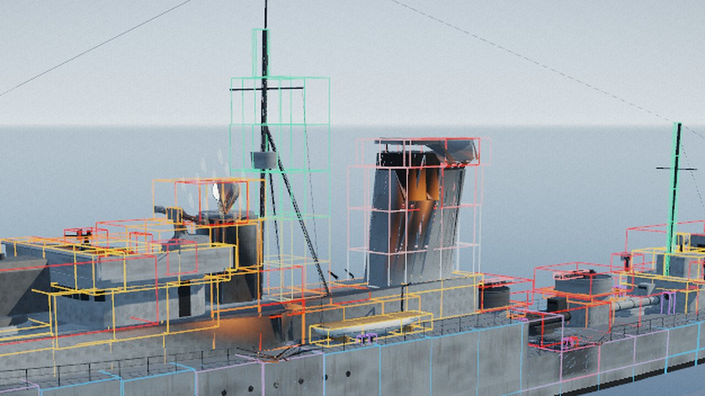
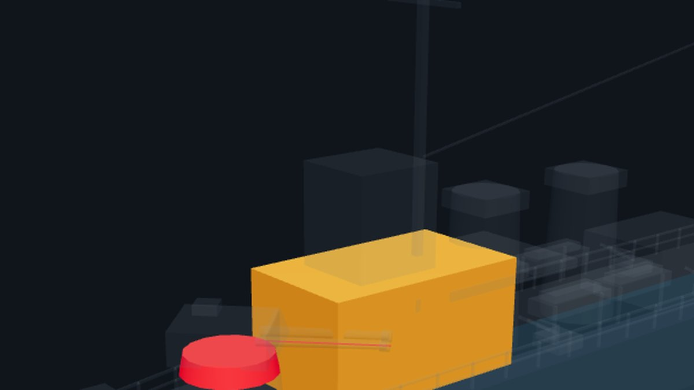

Steel Salvo Labs
The workshop behind the game, in five areas: models (real warships rebuilt from code at true scale), environment (sea, weather, sky, time of day, land), graphics and filters, special effects, and the tools that check and optimise it all.
Models

Grom-class destroyer as built by J. Samuel White, Cowes: 114 m, seven 120 mm Bofors guns, two triple torpedo mounts. Orbit, measure, toggle parts, train the mounts.
Next hull for the kit.
Next hull for the kit.
Seaplanes and coastal guns.

A jack-up drilling rig (Super 300 class) built from code at real scale: 157 m truss legs, jack houses, cantilevered derrick, cranes, quarters, helideck, lifeboats. Jack it up in any water depth, float it, skid the cantilever. Next: quays, piers, breakwaters, harbours, lighthouses.
Environment

Sea states from calm to gale, reflections, foam, bow wave, Kelvin wake, spray, wet hull and ship motion — two variants side by side, with the cost of every effect. Weather joins here.

Procedural land and sea from 0 to 100 % land: islands, archipelagos, a coast, fjords, highlands, with erosion, beaches, shallows and surf. The map wraps around (sail out one side, in at the other) or is bounded by buoys, mountains or a wall. Sail ORP Błyskawica through it.
Procedural clouds, seven weathers with rain, squalls, sea fog and lightning; dawn, dusk and a moonlit night with stars. For now part of the Look Lab.
Stars, moon phases, aurora: the view above the horizon at night.
Graphics and filters
Special effects
Shell hits, magazine detonations, burning decks.
Shell splashes, torpedo hits, depth charges, spray.
Funnel smoke, smoke screens, burning wrecks.
Procedural damage on the transformer’s hitboxes: falling debris, collapsing superstructure, flooding.
Tools

The lab ship made game-ready: three levels of detail (99 → 7 draw calls far away), 458 hitboxes for procedural destruction, damage drawn by the shader, fleet performance test.

Every lab and game ship examined for the repeating mistakes: inside-out shapes, holes, flicker, floating pieces, guns firing into their own ship, fittings through the hull, over-budget models. Click a finding to see it.